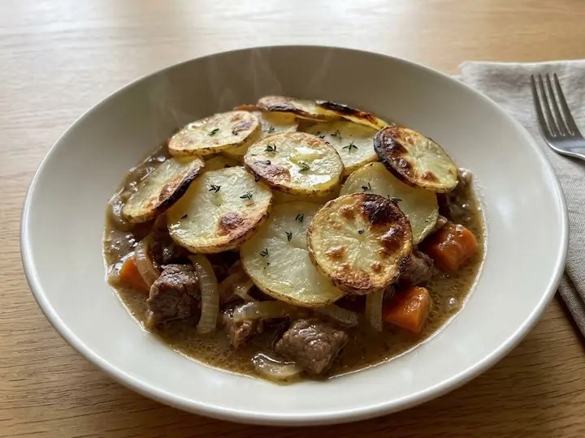

UK · Lamb · No. 311
Lancashire Hotpot with Lamb and Sliced Potatoes
A single portion of British cooking, ready in 45 minutes with 10 minutes of prep. Written for one, so there is nothing to halve and nothing to waste.
Method
- 1
Preheat the oven to 180°C (fan 160°C).
- 2
Brown the lamb in a little of the butter in a frying pan over high heat for 2 minutes.
- 3
Layer the onion, carrot and lamb in a small ovenproof dish, tucking in the thyme and seasoning as you go, then pour over the stock and Worcestershire sauce.
- 4
Arrange the sliced potatoes on top in overlapping layers and brush with the melted butter.
- 5
Cover with foil and bake for 25 minutes, then uncover and bake a further 10 minutes until the potatoes are golden and tender.
Cook's notes
- Sizes. Vegetables, fruit and eggs are medium unless the recipe says otherwise. A tin is a standard 400g tin.
- Dairy. Salted or unsalted butter both work; with salted, go easy on any extra salt. Use full-fat soured cream, crème fraîche and yoghurt in anything hot, as low-fat versions split.
- Stock. A cube or pot made up as the packet says. Cubes are salty, so taste before adding more salt.
- Heat. Medium means a gentle sizzle, not spitting. High means the oil shimmers before the food goes in. A simmer is a few lazy bubbles, not a rolling boil. Leave the lid off unless the recipe says to cover.
- Pans. A small saucepan is about 16cm and a frying pan about 24cm. Sauces reduce faster in a wider pan, so go by how it looks rather than the clock.
- Doneness. Chicken and turkey should reach 75°C in the thickest part, pork 65 to 70°C, and beef steak 55°C for medium-rare. Rest steaks and chops for a few minutes before slicing.
- Finishing. Taste before serving. Most dishes want a pinch more salt, and a squeeze of lemon or a splash of vinegar lifts anything rich.
- Leftovers. Cool quickly, cover and keep in the fridge for up to 2 days, then reheat until piping hot. Cooked rice keeps for 1 day and should only be reheated once.
solosupper.co.uk/recipes/lancashire-hotpot-with-lamb-and-sliced-potatoes/
Find more like this